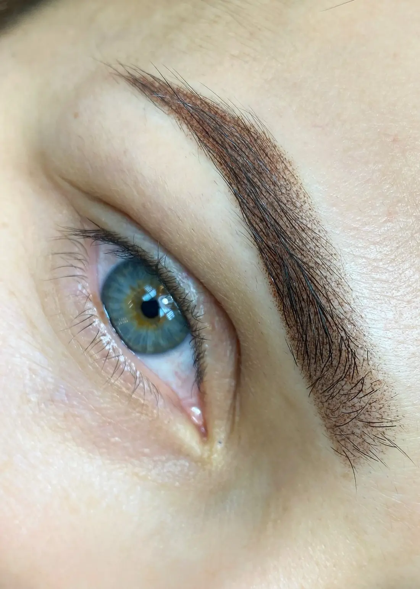
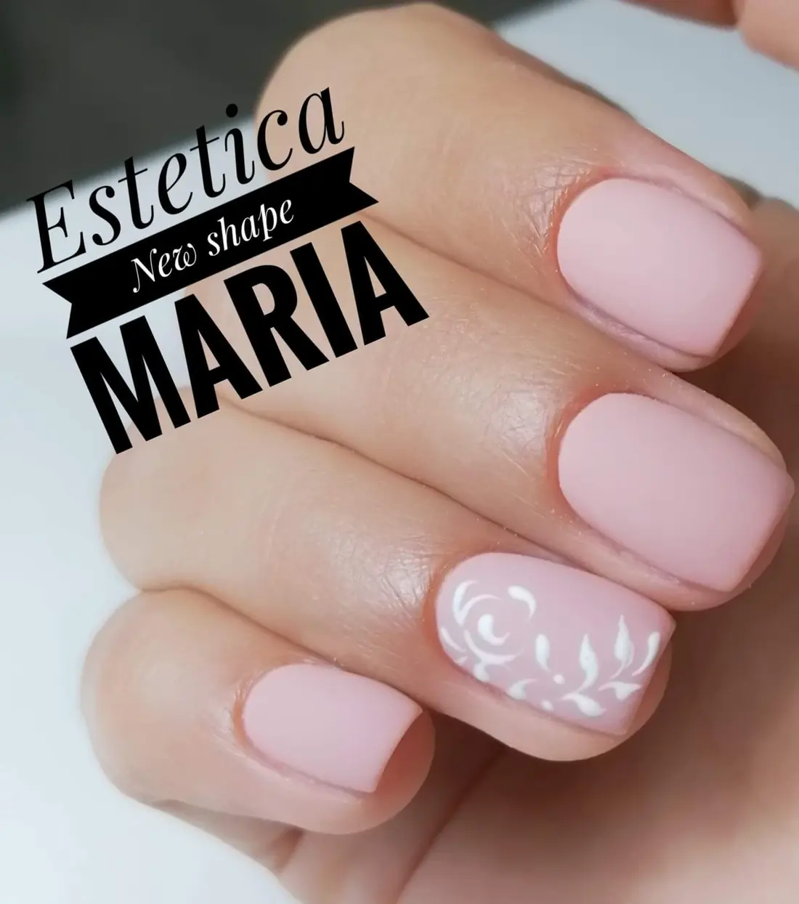
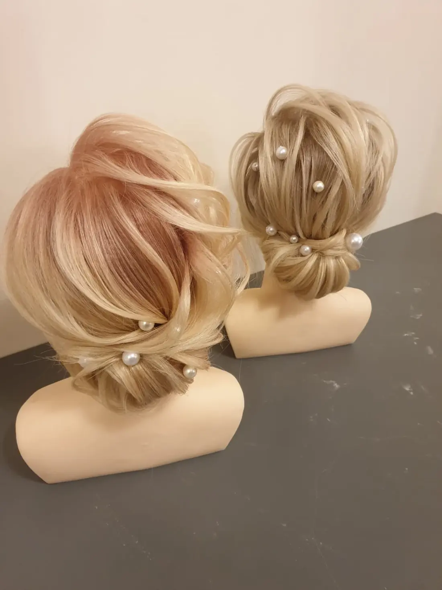
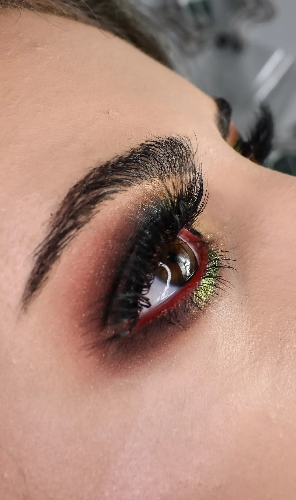
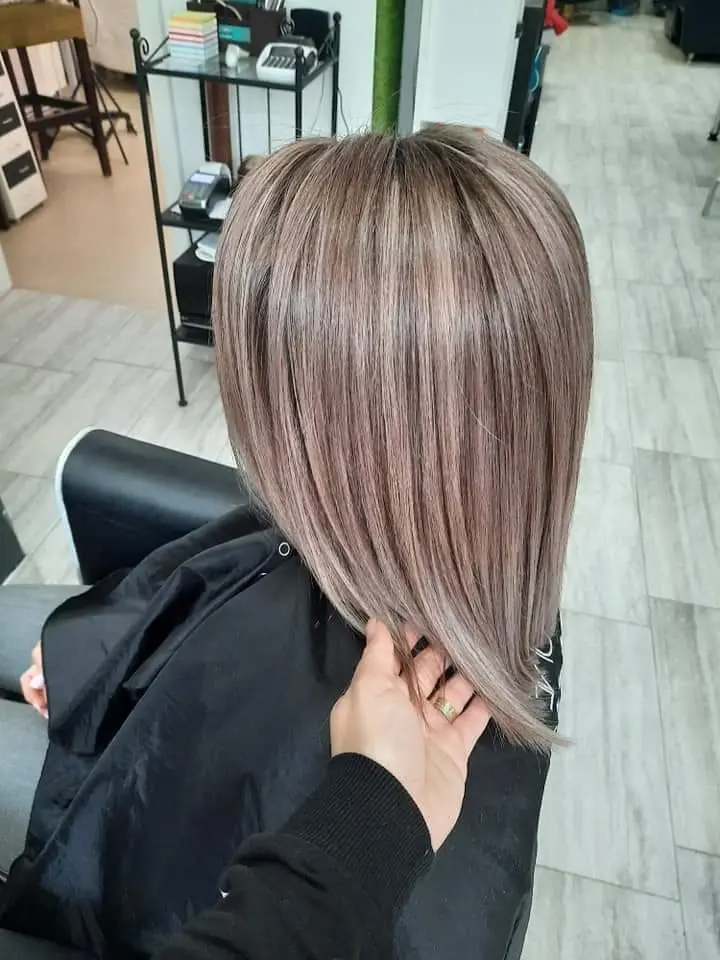
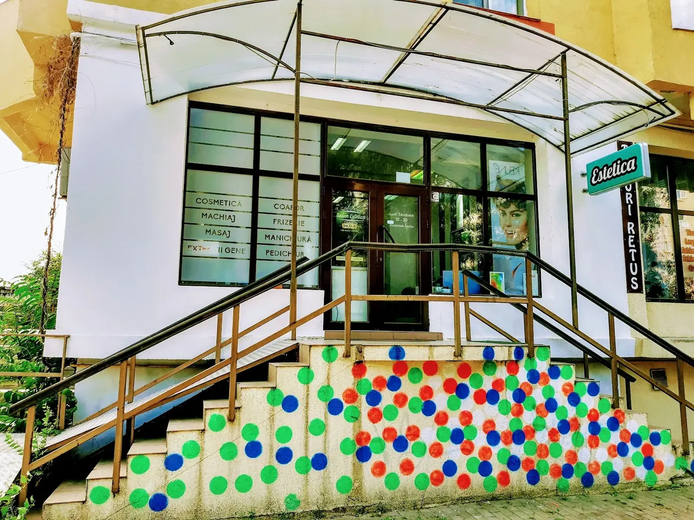
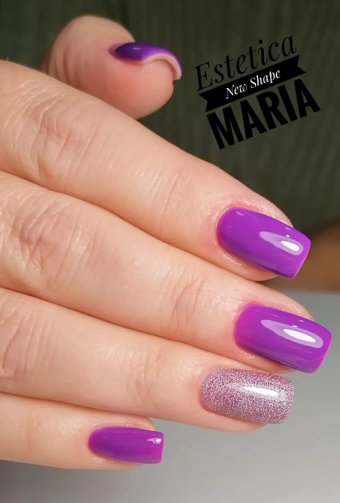
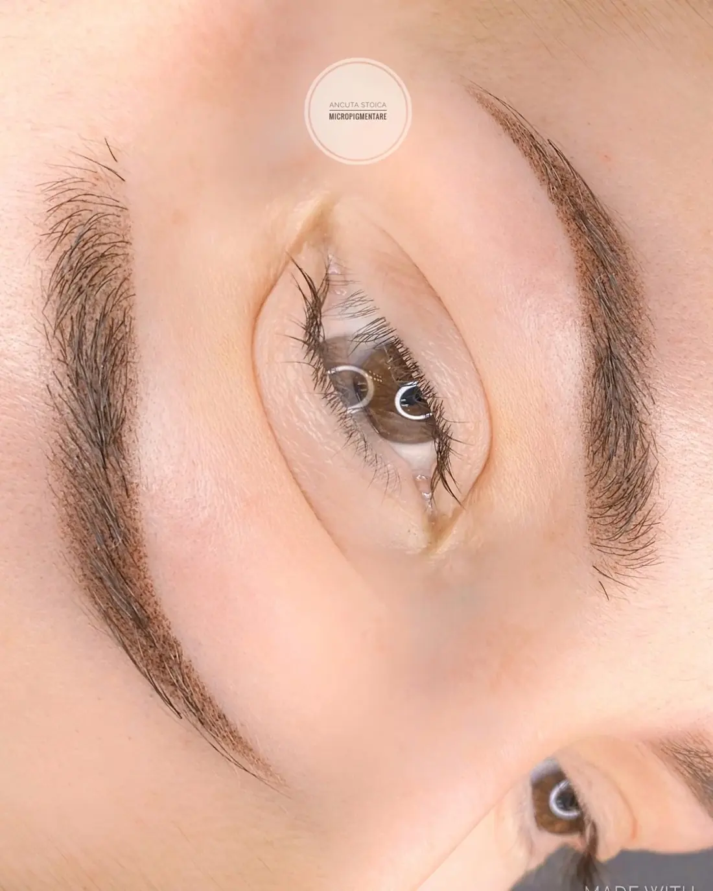
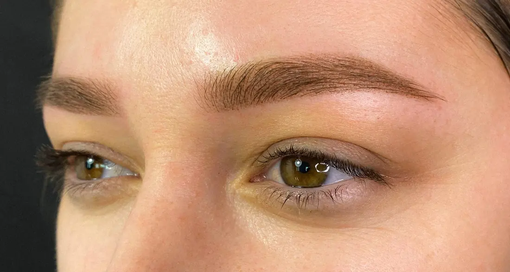
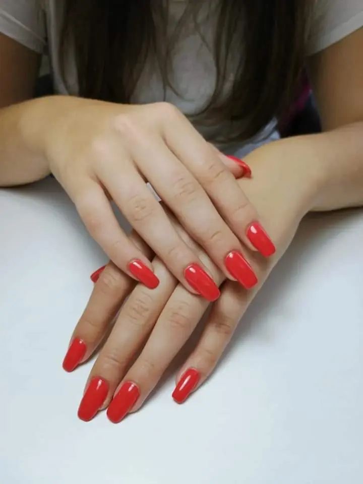

Esteticanew shape
{{Sprâncene, gene, machiaj, unghii, coafor și masaj, sub același acoperiș pe Strada Frumoasă. Vii cu forma de acum, pleci cu forma nouă.|Brows, lashes, make-up, nails, hair and massage, under one roof on Strada Frumoasă. Come in with the shape you have, leave with the new one.|Sobrancelhas, pestanas, maquilhagem, unhas, cabeleireiro e massagem, sob o mesmo teto na Strada Frumoasă. Entra com a forma de agora, sai com a forma nova.}}
{{Opt servicii, o singură adresă.|Eight services, one address.|Oito serviços, uma só morada.}}
{{Atinge unul și programarea pornește cu el ales.|Tap one and your booking starts with it chosen.|Toque num e a marcação começa com ele escolhido.}}
{{Forma nouă, în detaliu.|The new shape, up close.|A forma nova, ao pormenor.}}





{{Revin, și o spun.|They come back, and say so.|Voltam, e dizem-no.}}
- {{profesionalism|professionalism|profissionalismo}}
{{Clientele vorbesc despre profesionalismul și dedicarea echipei și recomandă salonul fără rezerve.|Clients talk about the team’s professionalism and dedication and recommend the salon without hesitation.|As clientes falam do profissionalismo e da dedicação da equipa e recomendam o salão sem reservas.}}
- {{eleganță|elegance|elegância}}
{{Locul e descris ca elegant, curat și primitor, iar prețurile — corecte.|The place is described as elegant, clean and welcoming, and the prices as fair.|O espaço é descrito como elegante, limpo e acolhedor, e os preços como justos.}}
- {{mâini sigure|steady hands|mãos seguras}}
{{Manichiura și machiajul primesc cele mai multe laude: unghii lucrate cu migală și un machiaj de artist.|Nails and make-up get the most praise: carefully done manicures and artist-level make-up.|A manicure e a maquilhagem recebem mais elogios: unhas feitas com minúcia e maquilhagem de artista.}}

{{Caută scara cu buline.|Look for the dotted steps.|Procure a escada às bolinhas.}}
- {{Strada Frumoasă 4, Iași — sub copertina de sticlă, cu firma turcoaz Estetica.|Strada Frumoasă 4, Iași — under the glass canopy, with the teal Estetica sign.|Strada Frumoasă 4, Iași — debaixo do alpendre de vidro, com o letreiro turquesa Estetica.}}
- —
- {{Programarea e cea mai sigură cale: sună sau trimite cererea scrisă.|Booking is the surest way in: call or send a written request.|A marcação é o caminho mais seguro: ligue ou envie o pedido escrito.}}
{{De la vârfurile părului la vârful unghiilor.|From the tips of your hair to the tips of your nails.|Das pontas do cabelo às pontas das unhas.}}
{{Opt servicii, toate pe aceeași adresă. Prețurile le afli la telefon sau în răspunsul la cererea ta.|Eight services, all at one address. Prices come by phone or in the reply to your request.|Oito serviços, todos na mesma morada. Os preços sabem-se ao telefone ou na resposta ao seu pedido.}} {{prețuri de confirmat|prices to be confirmed|preços a confirmar}}
{{Alegi serviciul, ziua și ora.|Pick the service, the day and the time.|Escolhe o serviço, o dia e a hora.}}
{{Cartonașul se completează pe măsură ce alegi. Îl trimiți pe WhatsApp sau prin SMS, iar salonul îți confirmă ora.|The card fills in as you choose. Send it by WhatsApp or SMS and the salon confirms your time.|O cartão preenche-se à medida que escolhe. Envie por WhatsApp ou SMS e o salão confirma a hora.}}
{{Pe Strada Frumoasă, firește.|On Strada Frumoasă — “Beautiful Street”.|Na Strada Frumoasă — a “Rua Bonita”.}}
{{O scară cu buline colorate, o copertină de sticlă și, înăuntru, opt servicii de înfrumusețare făcute de aceeași echipă.|Steps covered in coloured dots, a glass canopy and, inside, eight beauty services done by the same team.|Uma escada com bolinhas coloridas, um alpendre de vidro e, lá dentro, oito serviços de beleza feitos pela mesma equipa.}}




{{Un salon deținut și condus de o femeie.|A salon owned and run by a woman.|Um salão detido e gerido por uma mulher.}}
{{Un loc prietenos pentru comunitatea LGBTQ+.|A friendly place for the LGBTQ+ community.|Um espaço amigo da comunidade LGBTQ+.}}
{{Coafor, frizerie, machiaj, cosmetică, gene, manichiură, pedichiură și masaj.|Hair, barbering, make-up, skincare, lashes, manicure, pedicure and massage.|Cabeleireiro, barbearia, maquilhagem, estética, pestanas, manicure, pedicure e massagem.}}
{{Întrebări de dinainte.|Questions before you come.|Perguntas antes de vir.}}
{{Strada Frumoasă 4.|Strada Frumoasă 4.|Strada Frumoasă 4.}}
{{Iași, 700729. Luni–sâmbătă, 08–20.|Iași, 700729. Monday–Saturday, 8 am–8 pm.|Iași, 700729. Segunda a sábado, 08–20.}}
{{Telefon|Phone|Telefone}}
0746 674 712Facebook: Estetica New Shape · Instagram: {{de confirmat|to be confirmed|a confirmar}} · E-mail: {{de confirmat|to be confirmed|a confirmar}}